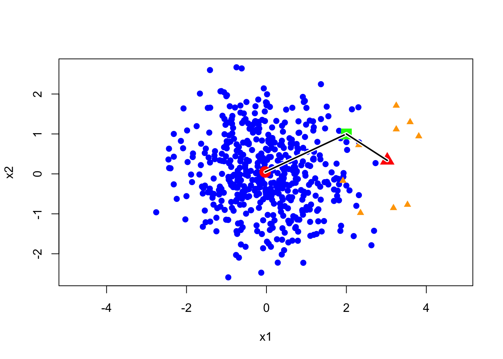
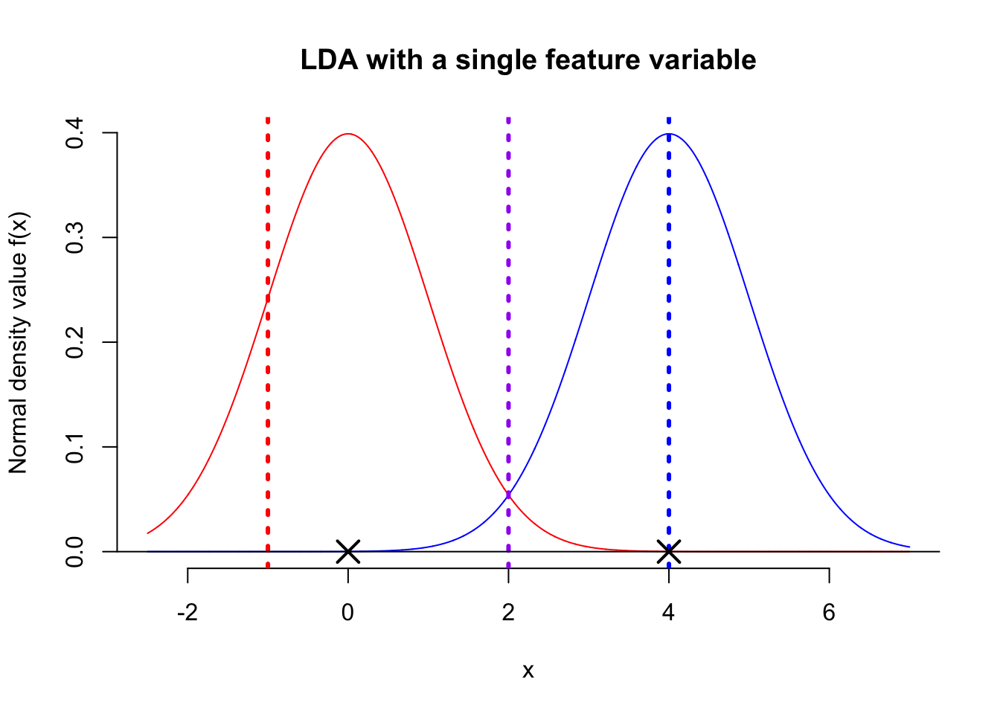
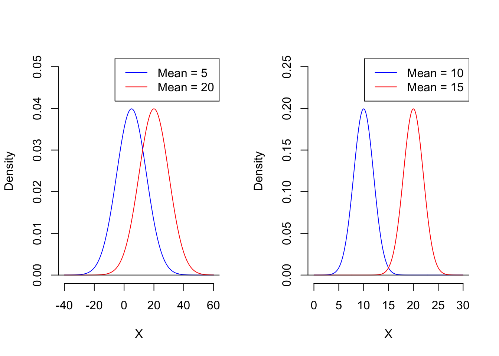

4.3 Further Discussion
So far so good! We have developed the first model, or algorithm, for a binary classification problem. I hope you got a real feel for classifiers. Next, I will discuss this classifier from various perspectives.
4.3.1 More carefully
Let’s go back to the initial motivating example. In fact, we are still missing a crucial piece of information for this problem: the distribution of the target variable. For example, suppose I add a condition before you make a decision: this observation is from an athlete in the Swedish delegation at the Olympic Village. Then, you certainly wouldn’t classify this person as belonging to the Chinese group. This is an extreme example, but it truly highlights an issue: the distribution of the label variable can impact your prediction. Here, the distribution of label can be presented as \(\Pr(Y=1) = 1\) and \(\Pr(Y=-1) = 0\). Let’s modify this example to make it less extreme. Suppose I obtained this observation in Idivuoma. You can Google this place name, and you’ll find that it would be quite reasonable to say that the proportion of Swedish people here is 95%. Then, how do you make the prediction?
Let’s see a toy example. As shown in the image below, let’s assume we have two categories, and their proportions are not 50/50. It’s clear that the blue category appears significantly more often than the orange one. Now, I have a green point, and its distance to the orange center is significantly shorter than to the blue center. This means that the likelihood of the green point under the orange model is higher than under the blue model. So, the question is: which category do you think it belongs to?
In this example, the green point is closer to the orange group, however, a more reasonable label is blue since we have more chance to observe a blue point than an orange point in the neighborhood of green point. Next, we discuss how to use the prior probability to correct our prediction. First, let’s clarify our decision rule. Essentially, our previous decision-making method can be summarized by an expression.
\[ \widehat{y}=\arg \max_{y}\Pr(\textbf{x}|y) \] In this expression, \(\arg \max_{y}\) means return the value of \(y\) such that the conditional probability (likelihood) of observation of \(\textbf{x}\), \(\Pr(\textbf{x}|y)\), is larger. To take the prior probability \(\Pr(y = 1)\) and \(\Pr(y = -1)\) into account, we can add this prior probability on the RHS of the expression, such that the majority gets more weight for the final decision. That is \[ \widehat{y}=\arg \max_{y} \Pr(\textbf{x}|y)\Pr(y) \] If we normalize this expression by \(\Pr(\textbf{x})\), and apply Bayes formula, then we can get the final expression of our classifier, that is \[ \widehat{y} = \arg \max_{y} \Pr(y| \textbf{x}) \] So, instead of evaluating the conditional likelihood, we predict the value of target variable \(y\) as the one with larger posterior likelihood. How does this change affect the decision boundary of LDA? We still need a bit math to make it clear, but the conclusion is simple: this change only affects the bias term \(w_0\) of the decision boundary. That is the bias term will be corrected as \(w_0-\log\left(\Pr(y=-1)/\Pr(y=1)\right)\).
Remark: Actually, \(\widehat{y} = \arg \max_{y} \Pr(y| \textbf{x})\) is the general decision rule for classification. It is not only for GDA classifier, but also for other classifier, for example, we will see it again in the discussion of logistic regression.
4.3.2 Multiple labels
So far, we discussed the binary-label case, however, it can be naturally extend to a multiple-label setting. In a binary-label case, we only need to evaluate the posterior likelihood when \(y=1\) or \(-1\). In a \(k\)-label setting, we need to estimate \(k\) different Normal model and evaluate \(k\) posterior likelihood of observation \(\textbf{x}\), then predict the label as the one holding the largest posterior likelihood.
4.3.3 R functions for GDA
We have implemented this idea in subsection 4.2.3. Is there any functions that can perform LDA and QDA directly? Yes, you can apply functions lda and qda in MASS package. We use the same demo data as before.
dat = iris[51:150,]
dat$Species = as.factor(as.numeric(dat$Species))
levels(dat$Species) = c("versicolor","virginica")
class(dat)[1] "data.frame"Remark: Notice that the type of data is data frame. It is very essential. Typically, functions in R packages require the input data to be of type ‘data frame’. This simplifies the function syntax and makes it easier to use the resulting model for predictions.
Next, we apply lda to train the classifier.
library(MASS)
model_lda = lda(Species~., data = dat)predict_res = predict(model_lda, dat)
str(predict_res)List of 3
$ class : Factor w/ 2 levels "versicolor","virginica": 1 1 1 1 1 1 1 1 1 1 ...
$ posterior: num [1:100, 1:2] 1 0.999 0.997 0.994 0.991 ...
..- attr(*, "dimnames")=List of 2
.. ..$ : chr [1:100] "51" "52" "53" "54" ...
.. ..$ : chr [1:2] "versicolor" "virginica"
$ x : num [1:100, 1] -2.47 -1.94 -1.53 -1.34 -1.26 ...
..- attr(*, "dimnames")=List of 2
.. ..$ : chr [1:100] "51" "52" "53" "54" ...
.. ..$ : chr "LD1"The usage of qda is very similar to lda, so I leave it for you to explore. Currently, we have a classifier in the form of an R function, which is very convenient to use. But what exactly does it look like? In other words, as a linear classifier, how can we write out its decision boundary according to the R outputs?
model_ldaCall:
lda(Species ~ ., data = dat)
Prior probabilities of groups:
versicolor virginica
0.5 0.5
Group means:
Sepal.Length Sepal.Width Petal.Length Petal.Width
versicolor 5.936 2.770 4.260 1.326
virginica 6.588 2.974 5.552 2.026
Coefficients of linear discriminants:
LD1
Sepal.Length -0.9431178
Sepal.Width -1.4794287
Petal.Length 1.8484510
Petal.Width 3.2847304We’ll discuss this in the next subsection.
4.3.4 Fisher’s idea
How can we write out the decision boundary for LDA based on R outputs? Well, let’s start by discussing a simpler problem.
Question 1: Suppose we have only one feature variable—how would we classify in this case?
First, one thing is certain: we need to find a threshold value for comparison, just like in the coin sort example. So, the question is, from a classification perspective, how do we choose the optimal threshold value? Let’s take a look at the figure below.

The above figure shows the distribution of the feature variable \(X\) for two populations, both following a normal distribution with a shared variance. Now, here’s the question: among the three suggested threshold values—red, blue, and purple—which do you think is most suitable for classification? The red dashed line is definitely not suitable. Although the blue population would be correctly classified, most observations to the right of the red line would be misclassified. Similarly, the blue dashed line is slightly better but still has a 50% chance of misclassification. Given this, the purple dashed line appears to be the optimal classification boundary. The next question is, do you know how to calculate the position of the purple dashed line? From the figure, it’s clear that the purple threshold value is simply the average of the centers (means) of the two populations. Therefore, the decision boundary for a single-feature Linear Discriminant Analysis (LDA) is: \[ X = \frac{\mu_1 + \mu_2}{2} \]
where \(\mu_1\) and \(\mu_2\) are the means of the two populations, i.e. an observation with a value of \(X\) larger than \(\frac{\mu_1 + \mu_2}{2}\) will be classified as blue.
All right, I can explain Fisher’s idea now. When we have multiple feature variables, we first assign a weight to each feature. Then, we calculate a weighted sum of all the feature variables to produce a score value. \[ \text{score} = w_1 x_1 + w_2x_2 + \dots + w_px_p \] In this way, the problem is reduced to the same form as in Problem 1 above, where we classify based on a threshold applied to this score. In other words, we need to find the mean score for each population separately and then calculate their average. This average serves as the threshold for classification, similar to the approach with a single feature. By comparing an observation’s score to this threshold, we can classify it accordingly.
Let’s look at the outputs of lda function of the previous example again. Think about how to write down the decision boundary of LDA classifier?
model_ldaCall:
lda(Species ~ ., data = dat)
Prior probabilities of groups:
versicolor virginica
0.5 0.5
Group means:
Sepal.Length Sepal.Width Petal.Length Petal.Width
versicolor 5.936 2.770 4.260 1.326
virginica 6.588 2.974 5.552 2.026
Coefficients of linear discriminants:
LD1
Sepal.Length -0.9431178
Sepal.Width -1.4794287
Petal.Length 1.8484510
Petal.Width 3.2847304Let me tell the quick answer. The last part of the outputs, ‘coefficients of linear discriminant’, tells us the weights for calculating the scores. Then, the mean scores of versicolor can be calculated as the weighted sum of means for versicolor in the ‘Group means’ \[
\textcolor{blue}{-0.94} \times 5.94 + (\textcolor{blue}{-1.48}) \times 2.77 + \textcolor{blue}{1.85} \times 4.26 + \textcolor{blue}{3.28} \times 1.32 = 2.53
\] Similarly, the mean scores of virginica is \[
\textcolor{blue}{-0.94} \times 6.59 + (\textcolor{blue}{-1.48}) \times 2.97 + \textcolor{blue}{1.85} \times 5.55 + \textcolor{blue}{3.28} \times 2.03 = 6.34
\] Quiz: Please write down the decision boundary of the LDA classifier.
So far, we only explained the first step of Fisher’s idea. However, how to find the optimal weights is still unclear. Let’s continue to investigate with the next question.
Question 2 ( NE ): What are the conditions for the optimal weights for a classification problem?
You might think the answer is simple. Referring back to the single feature variable case, based on the analysis above, the further apart the centers of the two populations are, the smaller the overlapping portion of their distributions will be, and the more likely we are to get a better threshold value. However, in reality, the distance between the centers of the two distributions alone does not fully reflect the optimal situation. See the figure below.

First, which situation do you think would lead to a better classifier? Clearly, in the case on the RHS, we can obtain a better classifier than in the case in LHS, because the two populations on the RHS have very little overlap. However, let’s take a look at their mean differences. The mean difference on the LHS is 15, which is greater than the 5 on the RHS.
Summary: We need to find a set of weights through which we can calculate the score values for the two populations. The best set of weights is the one that minimizes the distance between the centers of the score values for the two classes, while also minimizing the variance of the score values within each class. This optimal weights is called Fisher’s projection.
For now, let’s leave the algorithm for calculating the optimal weights to your future self, or ToDo4Sia. Here, you only need to know that the decision boundary obtained through Fisher’s projection is the same as the decision boundary from LDA. This is why LDA is often referred to as Fisher’s Linear Discriminant Analysis.